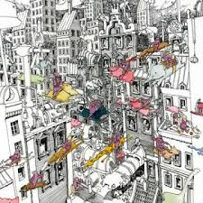

My name is Alex. I am a tranfer student from UTSA. I found out about the program here
at North West Vista through a friend of mine who got me into the creative media field. I started out taking pictures and shooting some video but I really wanted to expand my knowledge in this field. I am a first time mom and I absolutley love spending time with my boyfriend and baby boy. I am aslo a part time employee with H-E-B in the floral department.
Photograghy
This is one of my favorite shots. I saw this guy driving from my grandmas house and thought he looked so cool riding around on his banana bike and track set. He looked like a blast from the past.
H-E-B Florist
I have been with H-E-B for 8 years and I really enjoy my job. I work in a department where I get the oppritunity to be creative. Over the years I've learned how to make arrangments for any occasion, boquets, bridal boquets, funeral sprays, even corsages and boutoneers.
Motherhood
My was born on December 3, 2018 and he is my entire world! He is 9 months old and loves to wake up at least once at night. My boyfriend's name is Nick and he is the absolute best! He helps me out so much with our son and even more so now that I'm in school.
MUSIC!!
I love music! Here are some of my favorite bands and artist.
Dance Gavin Dance
Dance Gavin Dance is my number 1! I have been a fan of them since I was in middle school and they are definetly a band I can jam to this day.

Title Fight
Title Fight is a band I can listen to at least once a day. They are what the you call "pop punk".
Drake
Drake is also one of my favorites. His versatilaty is seriously unmacted. The guy was featured on a spanish song, sang in spanish and it still banged.